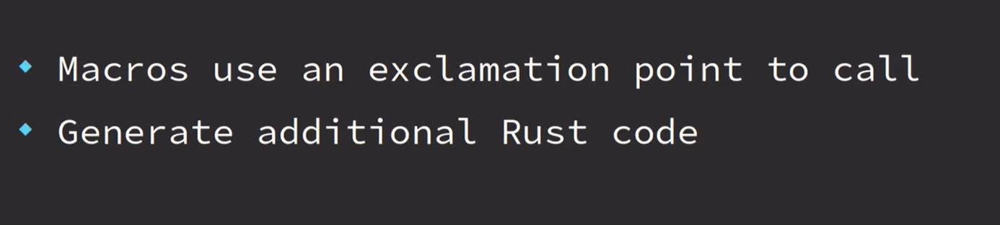

视频链接
1
1-1 intro


1-2 data types


1-3 variables
变量是将数据分配到临时内存位置的一种方式
变量默认不可变，使用 mut 关键字可以使之可变

1-4 functions


1-5 打印宏 println macro
调用宏需要加!符号


1-6 control flow if


1-7 repetition 循环


1-8 setup rust


1-9 comment 注释

1-10 activity functions

fn first_name(){
println!("jayson");
}
fn last_name(){
println!("lennon");
}
fn main() {
first_name();
last_name();
}

1-11 numeric types & basic arithmetic
// 1-11 numeric types & basic arithmetic
// cargo run --bin a
fn sub(a: i32, b: i32) -> i32 {
a - b
}
fn main() {
let sum = 2 * 2;
let value = 10 - 5;
let div = 10 / 2;
let mult = 5 * 5;
let sub = sub(8, 3);
let rem = 6 % 3;
let rem2 = 6 % 4;
println!("sum: {}\nvalue: {}\ndiv: {}",
sum, value, div);
println!("mult: {}",mult);
println!("sub: {}",sub);
println!("rem: {}",rem);
println!("rem2: {}",rem2);
}
1-12 activity basic math

fn sum(a: i32, b: i32) -> i32 {
a + b
}
fn display_result(result: i32) {
println!("{:?}", result)
}
fn main() {
let result = sum(2, 3);
display_result(result)
}
2
2-1 control flow with if & else
// control flow with if & else
fn main(){
let age=15;
if age>=21{
println!("ok to purchase")
}else {
println!("cannot purchase")
}
}
2-2
// activity logic with if else
fn main() {
let my_bool = true;
if my_bool {
println!("hello");
} else {
println!("goodbye")
}
}
2-3
// activity logic with if else
fn main() {
let n = 7;
if n > 5 {
println!(">5")
} else if n < 5 {
println!("<5")
} else {
println!("=5")
}
}
2-4 Match


2-5
// match demo1
fn main() {
let my_name = "Bill";
match my_name {
"Jayson" => println!("that is my name"),
"Bob" => println!("not my name"),
"Alice" => println!("hello alice"),
_ => println!("nice to meet you!"),
}
}
2-6
// match demo2
fn main() {
let my_bool = false;
match my_bool {
true => println!("it's true"),
false => println!("it's false"),
// _ => {},
}
}
2-7
// match demo3
fn main() {
let my_num = 2;
match my_num {
1 => println!("one"),
2 => println!("two"),
3 => println!("three"),
_ => println!("other"),
}
}
3
3-1
// loop
fn main() {
let mut i = 3;
loop {
println!("{:?}", i);
i = i - 1;
if i == 0 {
break;
}
}
println!("done")
}
3-2
// loop demo1
fn main() {
let mut n = 1;
loop {
println!("{:?}", n);
if n == 4 {
break;
}
n = n + 1;
}
}
3-3
// loop demo2
fn main() {
let mut i = 1;
while i <= 3 {
println!("{:?}", i);
i = i + 1;
}
}
3-4
// loop demo3
fn main() {
let mut counter = 5;
while counter >= 1 {
println!("{:?}", counter);
counter = counter - 1;
}
println!("done")
}
4
4-1


4-2
enum Direction {
Left,
Right,
Up,
}
fn main() {
let go = Direction::Left;
match go {
// 如果枚举里有的,而没有对应match,会报错
Direction::Left => println!("go left"),
Direction::Right => println!("go right"),
Direction::Up => println!("go up")
}
}
4-3
// enum demo1
enum Color {
Red,
Yellow,
Blue,
}
fn print_color(c: Color) {
match c {
Color::Red => { println!("red") }
Color::Yellow => { println!("yellow") }
Color::Blue => { println!("blue") }
}
}
fn main() {
print_color(Color::Blue)
}
4-4


4-5
// struct demo
struct GroceryItem {
stock: i32,
price: f64,
}
fn main() {
let cereal = GroceryItem {
stock: 10,
price: 2.99,
};
println!("stock: {:?}",cereal.stock);
println!("price: {:?}",cereal.price);
}
4-6
// enum struct demo
enum Flavor {
Sparkling,
Sweet,
Fruity,
}
struct Drink {
flavor: Flavor,
fluid_oz: f64,
}
fn print_drink(drink: Drink) {
match drink.flavor {
Flavor::Sparkling => { println!("sparkling") }
Flavor::Sweet => { println!("sweet") }
Flavor::Fruity => { println!("fruity") }
}
println!("oz: {:?}", drink.fluid_oz);
}
fn main() {
let sweet = Drink {
flavor: Flavor::Sweet,
fluid_oz: 6.0,
};
print_drink(sweet);
let fruity = Drink {
flavor: Flavor::Fruity,
fluid_oz: 10.0,
};
print_drink(fruity);
}
4-7


4-8
// tuple demo1
fn main() {
let coord = (2, 3);
println!("{:?} {:?}", coord.0, coord.1);
let (x, y) = (2, 3);
println!("{:?} {:?}", x, y);
let (name, age) = ("Emma", 20);
println!("{:?} {:?}", name, age);
let favorites = ("red", 14, "TX", "pizza", "TV SHOW", "home");
let state = favorites.2;
let place = favorites.5;
println!("{:?} {:?}", state, place);
}
4-9
// tuple demo2
fn coordinate() -> (i32, i32) {
(1, 7)
}
fn main() {
let (x, y) = coordinate();
if y > 5 {
println!(">5")
} else if y < 5 {
println!("<5")
} else {
println!("=5")
}
}
4-10


4-11
enum Access {
Admin,
Manager,
User,
Guest,
}
fn main() {
let access_level = Access::Guest;
let can_access_file = match access_level {
Access::Admin => true,
_ => false,
};
println!("can access: {:?}", can_access_file)
}
4-12
fn print_msg(gt_100: bool) {
match gt_100 {
true => { println!("its big") }
false => { println!("its small") }
}
}
fn main() {
let value = 100;
let is_gt_100 = value > 100;
print_msg(is_gt_100)
}
5
5-1 intermediate memory


5-2 ownership

(move)：调用第一次display_light时，dull的所有权转移到了display_light，再次调用，dull已经没有值(被所有者使用后删除)

(borrow)：因为是借用，传递的是变量引用（地址），所以调用多少层display都不会删除该变量（dull）


5-3
struct Book {
pages: i32,
rating: i32,
}
fn display_page_count(book: &Book) {
println!("pages = {:?}", book.pages)
}
fn display_rating(book: &Book) {
println!("rating = {:?}", book.rating)
}
fn main() {
let book = Book {
pages: 5,
rating: 9,
};
display_page_count(&book);
display_rating(&book);
}
5-4 impl
struct Temperature {
degrees_f: f64,
}
impl Temperature {
// Self -> Temperature
fn freezing() -> Self {
Self { degrees_f: 32.0 }
}
fn boiling() -> Self {
Self { degrees_f: 212.0 }
}
// self -> instance
fn show_temp(&self) {
println!("{:?} degrees F", self.degrees_f);
}
}
fn main() {
let hot = Temperature { degrees_f: 99.9 };
hot.show_temp();
let cold = Temperature::freezing();
cold.show_temp();
cold.show_temp();
cold.show_temp();
let boiling = Temperature::boiling();
boiling.show_temp();
boiling.show_temp();
boiling.show_temp();
}
6
6-1
struct GroceryItem {
quantity: i32,
id: i32,
}
fn display_quantity(item: &GroceryItem) {
println!("quantity: {:?}", item.quantity);
}
fn display_id(item: &GroceryItem) {
println!("quantity: {:?}", item.id);
}
fn main() {
let my_item = GroceryItem {
quantity: 3,
id: 99,
};
display_quantity(&my_item);
display_id(&my_item);
}
6-2
enum Color {
Brown,
Red,
}
impl Color {
fn print(&self) {
match self {
Color::Brown => { println!("brown") }
Color::Red => { println!("red") }
}
}
}
struct Dimensions {
width: f64,
height: f64,
depth: f64,
}
impl Dimensions {
fn print(&self) {
println!("weight: {:?}", self.width);
println!("height: {:?}", self.height);
println!("depth: {:?}", self.depth);
}
}
struct ShippingBox {
color: Color,
weight: f64,
dimensions: Dimensions,
}
impl ShippingBox {
fn new(weight: f64, color: Color, dimensions: Dimensions) -> Self {
Self {
weight,
color,
dimensions,
}
}
fn print(&self) {
self.color.print();
self.dimensions.print();
println!("weight: {:?}", self.weight);
}
}
fn main() {
let small_dimensions = Dimensions {
width: 1.0,
height: 2.0,
depth: 3.0,
};
let small_box=ShippingBox::new(5.0,Color::Red,small_dimensions);
small_box.print();
}
6-3 vector


6-4
struct Test {
score: i32,
}
fn main() {
let my_score = vec![
Test { score: 90 },
Test { score: 88 },
Test { score: 77 },
Test { score: 93 },
];
for test in my_score {
println!("score = {:?}", test.score);
}
}
6-5
fn main() {
let my_numbers = vec![10, 20, 30, 40];
// 这里用的是&,否则下面的.len会报错
for num in &my_numbers {
match num {
30 => println!("thirty"),
_ => println!("{:?}", num)
}
}
println!("number of elements = {:?}", my_numbers.len())
}
6-6 strings


6-7
struct LineItem {
name: String,
count: i32,
}
fn print_name(name: &str) {
println!("name: {:?}", name);
}
fn main() {
let receipt = vec![
LineItem {
name: "cereal".to_owned(),
count: 1,
},
LineItem {
name: String::from("fruit"),
count: 3,
},
];
for item in receipt {
print_name(&item.name);
println!("count: {:?}", item.count)
}
}
6-8
struct Person {
name: String,
fav_color: String,
age: i32,
}
fn print(data: &str) {
println!("{:?}", data)
}
fn main() {
let people = vec![
Person {
name: String::from("George"),
fav_color: String::from("green"),
age: 7,
},
Person {
name: String::from("Anna"),
fav_color: String::from("purple"),
age: 9,
},
Person {
name: String::from("Katie"),
fav_color: String::from("blue"),
age: 14,
},
];
for p in people {
if p.age <= 10 {
print(&p.name);
print(&p.fav_color);
}
}
}
7
7-1 derive
#[derive(Debug, Clone, Copy)]
enum Position {
Manager,
Supervisor,
Worker,
}
// 允许打印
#[derive(Debug, Clone, Copy)]
struct Employee {
position: Position,
work_hours: i64,
}
fn print_employee(emp: Employee) {
println!("{:?}", emp);
}
fn main() {
let me = Employee {
position: Position::Worker,
work_hours: 40,
};
// 因为有copy和clone，所有权不再转移，而是自动复制数据
print_employee(me);
print_employee(me);
}
7-2 type annotations
显示声明类型


7-3


7-4
enum Discount {
Percent(i32),
Flat(i32),
}
struct Ticket {
event: String,
price: i32,
}
fn main() {
let n = 3;
match n {
3 => println!("three"),
// 别名
other => println!("number: {:?}", other)
}
let flat = Discount::Flat(2);
match flat {
Discount::Flat(2) => println!("flat 2"),
Discount::Flat(amount) => println!("flat discount of {:?}", amount),
_ => (),
}
let concert = Ticket {
event: "convert".to_owned(),
price: 50,
};
match concert {
Ticket { price: 50, event } => println!("event @ 50 = {:?}", event),
Ticket { price, .. } => println!("price = {:?}", price),
}
}
7-5
enum Ticket {
Backstage(f64, String),
Standard(f64),
Vip(f64, String),
}
fn main() {
let tickets = vec![
Ticket::Backstage(50.0, "Billy".to_owned()),
Ticket::Standard(15.0),
Ticket::Vip(30.0, "Amy".to_owned()),
];
for ticket in tickets {
match ticket {
Ticket::Backstage(price, holder) => {
println!("Backstage ticket Holder: {:?}, price: {:?}", holder, price)
}
Ticket::Standard(price) => {
println!("Standard Price: {:?}", price)
}
Ticket::Vip(price, holder) => {
println!("VIP ticket Holder: {:?}, price: {:?}", holder, price)
}
}
}
}
7-6 Option Type


7-7
struct Survey {
q1: Option<i32>,
q2: Option<bool>,
q3: Option<String>,
}
fn main() {
let response = Survey {
q1: None,
// q1: Some(12),
q2: Some(true),
q3: Some("A".to_owned()),
};
match response.q1 {
None => { println!("q1: no response!") }
Some(ans) => { println!("q1: {:?}", ans) }
}
match response.q2 {
None => { println!("q1: no response!") }
Some(ans) => { println!("q1: {:?}", ans) }
}
match response.q3 {
None => { println!("q1: no response!") }
Some(ans) => { println!("q1: {:?}", ans) }
}
}
7-8
struct Student {
name: String,
locker: Option<i32>,
}
fn main() {
let mary = Student {
name: "Mary".to_owned(),
locker: None,
// locker: Some(3),
};
println!("student: {:?}", mary.name);
match mary.locker {
None => { println!("no locker assigned"); }
Some(num) => { println!("locker number: {:?}", num) }
}
}
7-9 generate document
/// A favorite color
enum Color {
Red,
Blue,
}
/// A piece of mail
struct Mail {
address: String,
}
/// Adds two numbers together
fn add(a: i32, b: i32) -> i32 {
a + b
}
/// 生成文档 cargo doc --open
fn main() {}
cargo doc --open


7-10 standard library
# 打开rust文档
rustup doc
fn main() {
let numbers=vec![1,2,3];
match numbers.is_empty() {
true => { println!("no numbers");}
false => { println!("has numbers");}
}
}

7-11
fn main() {
let my_str="this is my STRING";
println!("uppercase: {:?}",my_str.to_uppercase());
println!("lowercase: {:?}", my_str.to_lowercase());
}
8
8-1 Result Type


8-2
#[derive(Debug)]
enum MenuChoice {
MainMenu,
Start,
Quit,
}
fn get_choice(input: &str) -> Result<MenuChoice, String> {
match input {
"mainmenu" => { Ok(MenuChoice::MainMenu) }
"start" => { Ok(MenuChoice::Start) }
"quit" => { Ok(MenuChoice::Quit) }
_ => Err("menu choice not found".to_owned())
}
}
fn print_choice(choice: &MenuChoice) {
println!("choice = {:?}", choice);
}
fn pick_choice(input: &str) -> Result<(), String> {
// ?会自动匹配result,然后返回对应结果
let choice: MenuChoice = get_choice(input)?;
print_choice(&choice);
Ok(())
}
fn main() {
let choice: Result<MenuChoice, _> = get_choice("mainmenu");
match choice {
Ok(choice) => { print_choice(&choice) }
Err(e) => { println!("error = {:?}", e); }
}
let choice: Result<MenuChoice, _> = get_choice("other");
match choice {
Ok(choice) => { print_choice(&choice) }
Err(e) => { println!("error = {:?}", e); }
}
let choice = pick_choice("start");
println!("choice value = {:?}", choice);
}
8-3
struct Customer {
age: i32,
}
fn try_purchase(customer: &Customer) -> Result<(), String> {
if customer.age < 21 {
Err("customer must be at least 21 years old".to_owned())
} else { Ok(()) }
}
fn main() {
let ashley = Customer { age: 20 };
let purchased = try_purchase(&ashley);
println!("{:?}", purchased);
let ashley = Customer { age: 22 };
let purchased = try_purchase(&ashley);
println!("{:?}", purchased);
}
8-4
use crate::Position::Manager;
enum Position {
Maintenance,
Marketing,
Manager,
LineSupervisor,
KitchenStaff,
AssemblyTech,
}
enum Status {
Active,
Terminated,
}
struct Employee {
position: Position,
status: Status,
}
fn try_access(employee: &Employee) -> Result<(), String> {
match employee.status {
// return Err 终止了后续执行
Status::Terminated => return Err("terminated".to_owned()),
_ => (),
}
match employee.position {
Position::Maintenance => Ok(()),
Position::Marketing => Ok(()),
Position::Manager => Ok(()),
_ => Err("invalid position".to_owned())
}
}
fn print_access(employee: &Employee) -> Result<(), String> {
let attempt_access = try_access(employee)?;
println!("access ok");
Ok(())
}
fn main() {
let manager = Employee {
position: Position::Manager,
status: Status::Active,
};
match print_access(&manager) {
Err(e) => println!("access denied: {:?}", e),
_ => ()
}
let line = Employee {
position: Position::LineSupervisor,
status: Status::Active,
};
match print_access(&line) {
Err(e) => println!("access denied: {:?}", e),
_ => ()
}
let terminated = Employee {
position: Position::LineSupervisor,
status: Status::Terminated,
};
match print_access(&terminated) {
Err(e) => println!("access denied: {:?}", e),
_ => ()
}
}
9
9-1 hashmap


9-2
use std::collections::HashMap;
#[derive(Debug)]
struct Contents {
content: String,
}
fn main() {
let mut lockers = HashMap::new();
lockers.insert(1, Contents { content: "stuff".to_owned() });
lockers.insert(2, Contents { content: "shirt".to_owned() });
lockers.insert(3, Contents { content: "gym shorts".to_owned() });
for (locker_id, content) in lockers.iter() {
println!("id: {:?}, content: {:?}",locker_id,content);
}
}
9-3
use std::collections::HashMap;
fn main() {
let mut stock = HashMap::new();
stock.insert("Chair", 5);
stock.insert("Bed", 3);
stock.insert("Table", 2);
stock.insert("Couch", 0);
let mut total_stock = 0;
for (item, qty) in stock.iter() {
total_stock = total_stock + qty;
let stock_count = if qty == &0 {
"out of stock".to_owned()
} else {
format!("{:?}", qty)
};
println!("item={:?}, stock={:?}", item, stock_count);
}
println!("total stock={:?}", total_stock);
}
10
10-1 Basic Closures
fn add_fn(a: i32, b: i32) -> i32 {
a + b
}
fn main() {
// 闭包
let add1 = |a: i32, b: i32| -> i32{
a + b
};
let add2 = |a, b| a + b;
let sum = add_fn(1, 1);
println!("sum: {:?}", sum);
let sum1 = add1(1, 2);
println!("sum1: {:?}", sum1);
let sum2 = add2(1, 3);
println!("sum2: {:?}", sum2);
}
10-2 map combinator
fn maybe_num() -> Option<i32> {
return None;
}
fn maybe_word() -> Option<String> {
return Some("hello".to_owned());
}
fn main() {
let plus_one = match maybe_num() {
None => { None }
Some(num) => { Some(num + 1) }
};
println!("res: {:?}", plus_one);
// map只在有值的时候执行,none的时候不会运行
let plus_one = maybe_num().map(|num| num + 1);
println!("res: {:?}", plus_one);
let word_len = maybe_word()
.map(|word| word.len())
.map(|len| len * 2);
println!("res: {:?}", word_len);
}
10-3
#[derive(Debug)]
struct User {
user_id: i32,
name: String,
}
fn find_user(name: &str) -> Option<i32> {
let name = name.to_lowercase();
match name.as_str() {
"sam" => Some(1),
"matt" => Some(5),
"katie" => Some(9),
_ => None
}
}
fn main() {
let user_name = "sam";
let user = find_user(user_name).map(|user_id| {
User {
user_id,
name: user_name.to_owned(),
}
});
match user {
Some(user) => { println!("{:?}", user); }
None => { println!("user not found"); }
}
}
10-4
fn main() {
let a: Option<i32> = Some(12);
let a_is_some = a.is_some();
println!("a_is_some: {:?}",a_is_some);
let a_is_none = a.is_none();
println!("a_is_none: {:?}",a_is_none);
let a_mapped = a.map(|num| num + 1);
println!("a_mapped: {:?}",a_mapped);
// filter里返回的式子如果为true，就保留传入的值，为false就丢弃
let a_filtered = a.filter(|num| num == &1);
println!("a_filtered: {:?}",a_filtered);
// 如果a(调用or_else)的变量没有值，就返回式子里的值
let a_or_else = a.or_else(|| Some(5));
println!("a_or_else: {:?}",a_or_else);
let a_filtered = a.filter(|num| num == &1);
println!("a_filtered: {:?}",a_filtered);
// 和orelse差不多，但是返回的是值而不是option，会把值填入调用者
let unwrapped = a.unwrap_or_else(|| 0);
println!("unwrapped: {:?}",unwrapped);
}
10-5
#[derive(Debug, Eq, PartialEq)]
enum Access {
Admin,
User,
Guest,
}
fn maybe_access(name: &str) -> Option<Access> {
match name {
"admin" => Some(Access::Admin),
"gary" => Some(Access::User),
_ => None
}
}
fn root() -> Option<Access> {
Some(Access::Admin)
}
fn part_1() -> bool {
maybe_access("admin").is_some()
}
fn part_2() -> Option<Access> {
maybe_access("root").or_else(|| root())
}
fn part_3() -> Access {
maybe_access("Alice").unwrap_or_else(|| Access::Guest)
}
fn main() {}
#[cfg(test)]
mod test {
use crate::*;
#[test]
fn check_part_1() {
assert_eq!(part_1(), true, "Admins have an access level")
}
#[test]
fn check_part_2() {
assert_eq!(part_2(), Some(Access::Admin), "Root users have Admin access")
}
#[test]
fn check_part_3() {
assert_eq!(part_3(), Access::Guest, "Alice is a guest")
}
}
10-6 iterator
fn main() {
let numbers = vec![1, 2, 3, 4, 5];
// bad
// let mut plus_one = vec![];
// for num in numbers {
// plus_one.push(num + 1);
// }
// println!("{:?}", plus_one);
// better
let plus_one: Vec<_> = numbers
.iter()
.map(|num| num + 1)
.collect(); // -> new vec![]
println!("{:?}", plus_one);
let new_nums: Vec<_> = numbers
.iter()
.filter(|num| num <= &&3)
.collect(); // -> new vec![]
println!("{:?}", new_nums);
let numbers = vec![1, 2, 3, 4, 5];
let find_me: Option<&i32> = numbers
.iter()
.find(|num| num == &&3);
println!("{:?}", find_me);
let count = numbers
.iter()
.count();
println!("{:?}", count);
}
10-7
fn main() {
let data: Vec<_> = vec![1, 2, 3, 4, 5]
.iter()
.map(|num| num * 3)
.filter(|num| num > &10)
.collect();
for num in data {
println!("{:?}", num);
}
}
10-8 range
fn main() {
let range = 1..=3;
println!("{:?}",range);
let range = 1..4;
println!("{:?}",range);
// 左闭右开
for num in 1..4 {
println!("{:?}", num);
}
// 左闭右开
for ch in 'a'..'f'{
println!("{:?}",ch);
}
// 闭区间
for ch in 'a'..='f'{
println!("{:?}",ch);
}
}
10-9
enum Color {
Red,
Blue,
Green,
}
fn main() {
let maybe_user = Some("Jerry");
match maybe_user {
Some(user) => println!("user={:?}", user),
None => println!("no user")
}
if let Some(user) = maybe_user {
println!("user={:?}", user);
} else {
println!("no user");
}
let red = Color::Red;
if let Color::Red = red {
println!("its red!");
} else {
println!("its not red");
}
}
10-10
fn main() {
let mut data = Some(3);
while let Some(i) = data {
println!("loop");
data = None;
}
let numbers = vec![1, 2, 3];
let mut number_iter = numbers.iter();
while let Some(num) = number_iter.next() {
println!("num = {:?}", num);
}
println!("done");
}
11
11-1 modules
mod greet {
// 要使用外部库要在mod里加use
use std::collections::HashMap;
pub fn hello() {
println!("hello");
}
pub fn goodbye() {
println!("goodbye");
}
}
mod math {
pub fn add(a: i32, b: i32) -> i32 {
a + b
}
pub fn sub(a: i32, b: i32) -> i32 {
a - b
}
}
fn main() {
use greet::hello;
hello();
greet::goodbye();
println!("{}", math::add(1, 2));
println!("{}", math::sub(3, 2));
}
11-2
mod msg {
pub fn trim(msg: &str) -> &str {
msg.trim()
}
}
mod math {
pub fn add(lhs: isize, rhs: isize) -> isize {
lhs + rhs
}
pub fn sub(lhs: isize, rhs: isize) -> isize {
lhs - rhs
}
pub fn mul(lhs: isize, rhs: isize) -> isize {
lhs * rhs
}
}
fn main() {
let res = {
let two_plus_two = math::add(2, 2);
let three = math::sub(two_plus_two, 1);
math::mul(three, three)
};
assert_eq!(res, 9);
println!("(2 + 2 - 1) * 3 = {}", res);
let hello = {
let msg = "Hello ";
let msg = msg::trim(msg);
// capitalize(msg);
msg
};
let world = "world";
let msg = format!("{}", hello.to_owned() + ", " + world);
assert_eq!(&msg, "Hello, world");
println!("{}", msg);
}
11-3 testing
fn all_caps(word: &str) -> String {
word.to_uppercase()
}
fn main() {}
// sh: cargo test
#[cfg(test)]
mod test {
use crate::*;
#[test]
fn check_all_caps() {
let res = all_caps("hello");
let exp = String::from("HELLO");
println!("{:?} {:?}",res,exp);
assert_eq!(res, exp, "string should be all uppercase")
}
}
11-4
fn clamp(n: i32, lower: i32, upper: i32) -> i32 {
if n < lower {
lower
} else if n > upper {
upper
} else { n }
}
fn div(a: i32, b: i32) -> Option<i32> {
if b == 0 {
None
} else {
Some(a / b)
}
}
fn concat(first: &str, second: &str) -> String {
format!("{}{}", first, second)
}
fn main() {}
#[cfg(test)]
mod test {
use crate::*;
#[test]
fn clamp_lower() {
let res = clamp(10, 100, 1000);
let expected = 100;
assert_eq!(res, expected, "should be 100")
}
#[test]
fn clamp_upper() {
let res = clamp(5000, 100, 1000);
let expected = 1000;
assert_eq!(res, expected, "should be 1000")
}
#[test]
fn check_div() {
let res = div(6, 2);
let expected = Some(3);
assert_eq!(res, expected, "should be 3")
}
#[test]
fn check_div0() {
let res = div(1, 0);
let expected = None;
assert_eq!(res, expected, "should be 3")
}
#[test]
fn check_concat() {
let res = concat("a", "b");
let expected = String::from("ab");
assert_eq!(res, expected, "should be ab")
}
}
11-5 External Crates

11-6
use chrono::prelude::*;
fn main() {
let local: DateTime<Local> = Local::now();
println!("{:?}", local);
println!("{}", local.format("%Y-%m-%d %H:%M:%S").to_string());
}
# Cargo.toml
[package]
name = "hello"
version = "0.1.0"
edition = "2021"
# See more keys and their definitions at https://doc.rust-lang.org/cargo/reference/manifest.html
[dependencies]
chrono = "0.4.26"
11-7 External Modules
bin目录的文件会被单独编译，lib目录的文件可以被bin里的程序使用，mod.rs声明模块，
如果是带花括号的mod，是内联mod，而声明并以;结尾的是external mod


使用use，可以导出mod特定点，然后简化访问


11-8
fn main() {
use activity::math;
use activity::msg::{trim};
let res = {
let two_plus_two = math::add(2, 2);
let three = math::sub(two_plus_two, 1);
math::mul(three, three)
};
assert_eq!(res, 9);
println!("(2 + 2 - 1) * 3 = {}", res);
let hello = {
let msg = "Hello ";
let msg = trim(msg);
// capitalize(msg);
msg
};
let world = "world";
let msg = format!("{}", hello.to_owned() + ", " + world);
assert_eq!(&msg, "Hello, world");
println!("{}", msg);
}

# Cargo.toml
[lib]
name="activity"
path="src/activitylib.rs"
12
12-1 user input
use std::io;
fn get_input() -> io::Result<String> {
// 缓冲区
let mut buffer = String::new();
io::stdin().read_line(&mut buffer)?;
Ok(buffer.trim().to_owned())
}
fn main() {
let mut all_input = vec![];
let mut times_input = 0;
while times_input < 2 {
match get_input() {
Ok(words) => {
all_input.push(words);
times_input += 1;
}
Err(e) => { println!("error{:?}", e); }
}
}
for input in all_input{
println!("Original: {:?}, capitalized: {:?}",input,input.to_uppercase());
}
}
12-2

use std::io;
enum PowerState {
Off,
Sleep,
Reboot,
Shutdown,
Hibernate,
}
impl PowerState {
fn new(state: &str) -> Option<PowerState> {
let state = state.trim().to_lowercase();
// String -> str
match state.as_str() {
"off" => Some(PowerState::Off),
"sleep" => Some(PowerState::Sleep),
"reboot" => Some(PowerState::Reboot),
"shutdown" => Some(PowerState::Shutdown),
"hibernate" => Some(PowerState::Hibernate),
_ => None
}
}
}
fn print_power_action(state: PowerState) {
use PowerState::*;
match state {
Off => { println!("turning off"); }
Sleep => { println!("sleeping"); }
Reboot => { println!("rebooting"); }
Shutdown => { println!("shutting down"); }
Hibernate => { println!("hibernating"); }
}
}
fn main() {
let mut buffer = String::new();
let user_input_status = io::stdin().read_line(&mut buffer);
// 输入ok
if user_input_status.is_ok() {
match PowerState::new(&buffer) {
Some(state) => print_power_action(state),
None => println!("invalid power state")
}
} else {
println!("error reading input");
}
}
12-3


12-4 ~ 12-9
use std::collections::HashMap;
use std::io;
use std::num::ParseFloatError;
#[derive(Debug, Clone)]
pub struct Bill {
name: String,
amount: f64,
}
pub struct Bills {
inner: HashMap<String, Bill>,
}
impl Bills {
fn new() -> Self {
Self {
inner: HashMap::new(),
}
}
fn add(&mut self, bill: Bill) {
self.inner.insert(bill.name.to_string(), bill);
}
fn get_all(&self) -> Vec<&Bill> {
self.inner.values().collect()
}
fn remove(&mut self, name: &str) -> bool {
self.inner.remove(name).is_some()
}
fn update(&mut self, name: &str, amount: f64) -> bool {
match self.inner.get_mut(name) {
Some(bill) => {
bill.amount = amount;
true
}
None => false,
}
}
}
fn get_input() -> Option<String> {
let mut buffer = String::new();
while io::stdin().read_line(&mut buffer).is_err() {
println!("Please enter your data again");
}
let input = buffer.trim().to_owned();
if &input == "" {
None
} else {
Some(input)
}
}
fn get_bill_amount() -> Option<f64> {
println!("Amount:");
loop {
let input = match get_input() {
None => { return None; }
Some(input) => { input }
};
if &input == "" {
return None;
}
let parse_input: Result<f64, _> = input.parse();
match parse_input {
Ok(amount) => { return Some(amount); }
Err(_) => { println!("Please enter a number"); }
}
}
}
mod menu {
use crate::{Bill, Bills, get_bill_amount, get_input};
pub fn add_bill(bills: &mut Bills) {
println!("Bill name:");
let name = match get_input() {
None => { return; }
Some(input) => { input }
};
println!("Bill amount:");
let amount = match get_bill_amount() {
None => { return; }
Some(input) => { input }
};
let bill = Bill { name, amount };
bills.add(bill);
println!("Bill added");
}
pub fn view_bills(bills: &Bills) {
for bill in bills.get_all() {
println!("{:?}", bill);
}
}
pub fn remove_bill(bills: &mut Bills) {
for bill in bills.get_all() {
println!("{:?}", bill);
}
println!("Enter bill name to remove:");
let name = match get_input() {
None => { return; }
Some(name) => { name }
};
if bills.remove(&name) {
println!("bill removed");
} else {
println!("bill not found");
}
}
pub fn update_bill(bills: &mut Bills) {
for bill in bills.get_all() {
println!("{:?}", bill);
}
println!("Enter bill to update:");
let name = match get_input() {
None => { return; }
Some(name) => { name }
};
println!("Enter new amount");
let amount = match get_bill_amount() {
None => { return; }
Some(amount) => { amount }
};
if bills.update(&name, amount) {
println!("updated");
} else {
println!("bill not found");
}
}
}
/// 枚举系统功能
enum MainMenu {
AddBill,
ViewBill,
RemoveBill,
UpdateBill,
}
impl MainMenu {
fn from_str(input: &str) -> Option<MainMenu> {
match input {
"1" => Some(Self::AddBill),
"2" => Some(Self::ViewBill),
"3" => Some(Self::RemoveBill),
"4" => Some(Self::UpdateBill),
_ => None
}
}
fn show() {
println!("");
println!(" == Bill Manager == ");
println!("1. Add Bill");
println!("2. View Bill");
println!("3. Remove Bill");
println!("4. Update Bill");
println!("");
println!("Enter selection");
}
}
fn run_program() -> Option<()> {
let mut bills = Bills::new();
loop {
MainMenu::show();
// expect -> 如果出错就打印
let input = get_input().expect("no data entered");
match MainMenu::from_str(input.as_str()) {
Some(MainMenu::ViewBill) => menu::view_bills(&bills),
Some(MainMenu::AddBill) => menu::add_bill(&mut bills),
Some(MainMenu::RemoveBill) => menu::remove_bill(&mut bills),
Some(MainMenu::UpdateBill) => menu::update_bill(&mut bills),
None => break,
}
}
None
}
fn main() {
run_program();
}
13
13-1 traits


13-2
trait Fall {
fn hit_ground(&self);
}
struct Vase;
impl Fall for Vase {
fn hit_ground(&self) {
println!("the vase broke!");
}
}
struct Cat;
impl Fall for Cat {
fn hit_ground(&self) {
println!("the cat casually walked away");
}
}
fn fall(thing: impl Fall) {
thing.hit_ground();
}
fn main() {
fall(Vase{});
fall(Cat{});
}
13-3
trait Perimeter {
fn calculate_perimeter(&self) -> i32;
}
struct Square {
side: i32,
}
impl Perimeter for Square {
fn calculate_perimeter(&self) -> i32 {
self.side * 4
}
}
struct Triangle {
side_a: i32,
side_b: i32,
side_c: i32,
}
impl Perimeter for Triangle {
fn calculate_perimeter(&self) -> i32 {
self.side_a + self.side_b + self.side_c
}
}
fn print_perimeter(shape: impl Perimeter) {
let perimeter = shape.calculate_perimeter();
println!("perimeter = {:?}", perimeter);
}
fn main() {
let square = Square { side: 5 };
print_perimeter(square);
let triangle = Triangle {
side_a: 2,
side_b: 3,
side_c: 4,
};
print_perimeter(triangle)
}
13-4 trait default
#[derive(Debug)]
struct Package {
weight: f64,
}
impl Package {
fn new(weight: f64) -> Self {
Self { weight }
}
}
impl Default for Package {
fn default() -> Self {
Self { weight: 3.0 }
}
}
fn main() {
let p = Package::default();
println!("{:?}",p);
}
13-5 generic functions


13-6
trait CheckIn {
fn check_in(&self);
fn process(&self);
}
struct Pilot;
impl CheckIn for Pilot {
fn check_in(&self) {
println!("checked in as pilot");
}
fn process(&self) {
println!("pilot enters the cockpit");
}
}
struct Passenger;
impl CheckIn for Passenger {
fn check_in(&self) {
println!("checked in as passenger");
}
fn process(&self) {
println!("passenger takes a seat");
}
}
struct Cargo;
impl CheckIn for Cargo {
fn check_in(&self) {
println!("cargo checked in");
}
fn process(&self) {
println!("cargo moved to storage");
}
}
fn process_item<T: CheckIn>(item: T) {
item.check_in();
item.process();
}
fn main() {
let paul=Passenger;
let kathy=Pilot;
let cargo1=Cargo;
let cargo2=Cargo;
process_item(paul);
process_item(kathy);
process_item(cargo1);
process_item(cargo2);
}
13-7
#[derive(Debug)]
enum ServicePriority {
High,
Standard,
}
trait Priority {
fn get_priority(&self) -> ServicePriority;
}
#[derive(Debug)]
struct ImportantGuest;
impl Priority for ImportantGuest {
fn get_priority(&self) -> ServicePriority {
ServicePriority::High
}
}
#[derive(Debug)]
struct Guest;
impl Priority for Guest {
fn get_priority(&self) -> ServicePriority {
ServicePriority::Standard
}
}
fn print_guest_priority<T: Priority + std::fmt::Debug>(guest: T) {
println!("{:?} is {:?} priority", guest, guest.get_priority());
}
fn main() {
print_guest_priority(Guest);
print_guest_priority(ImportantGuest);
}
13-8 generic structures


13-9


13-10
struct Dimensions {
width: f64,
height: f64,
depth: f64,
}
trait Convey {
fn weight(&self) -> f64;
fn dimensions(&self) -> Dimensions;
}
struct ConveyorBelt<T: Convey> {
pub items: Vec<T>,
}
impl<T: Convey> ConveyorBelt<T> {
pub fn add(&mut self, item: T) {
self.items.push(item);
}
}
struct CarPart {
width: f64,
height: f64,
depth: f64,
weight: f64,
part_number: String,
}
impl Default for CarPart {
fn default() -> Self {
Self {
width: 5.0,
height: 1.0,
depth: 2.0,
weight: 3.0,
part_number: "abc".to_owned(),
}
}
}
impl Convey for CarPart {
fn weight(&self) -> f64 {
self.weight
}
fn dimensions(&self) -> Dimensions {
Dimensions {
width: self.width,
height: self.height,
depth: self.depth,
}
}
}
fn main() {
let mut belt = ConveyorBelt { items: vec![] };
belt.add(CarPart::default());
let mut belt=ConveyorBelt{items:vec![]};
belt.add(5);
}